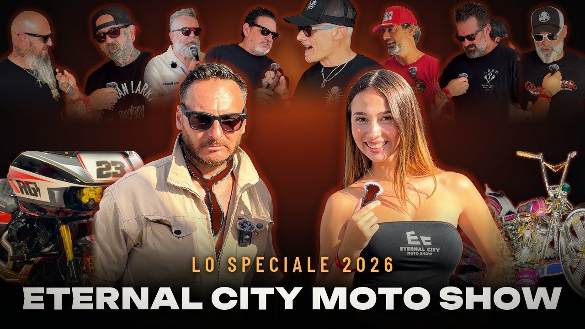
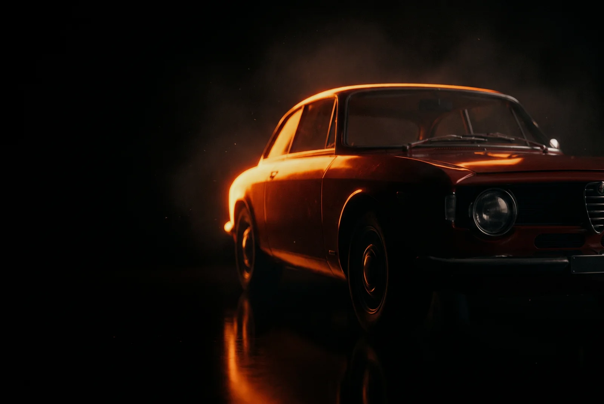
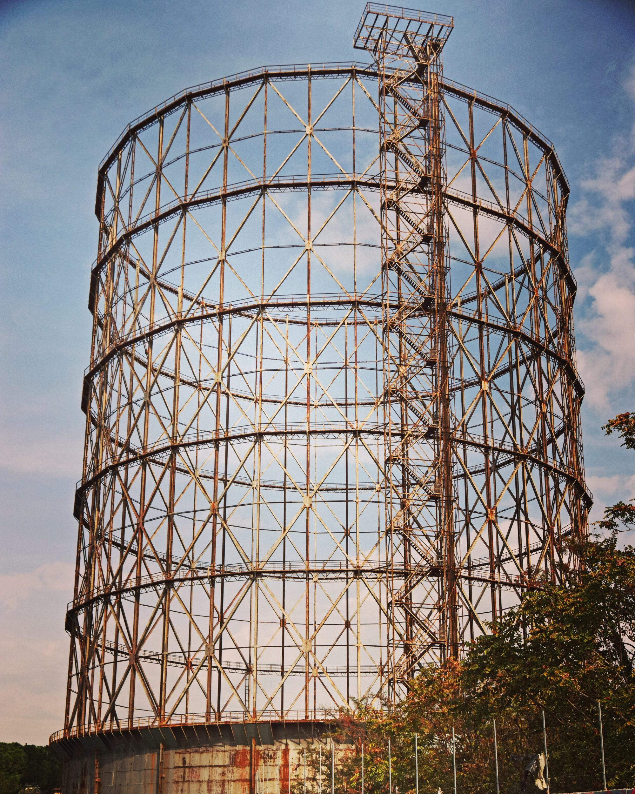
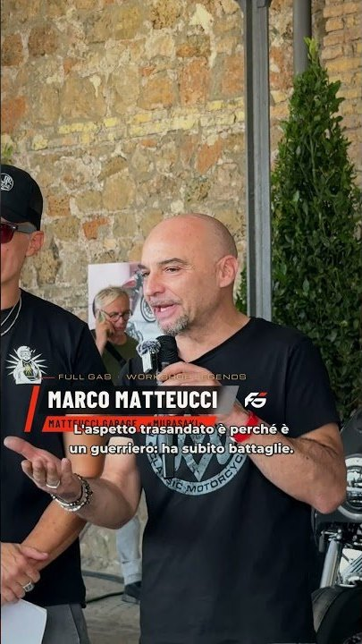
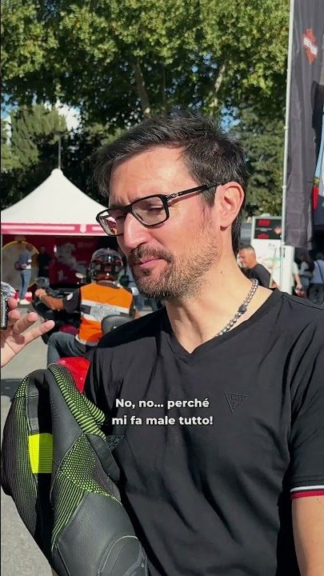

Full Gas · Motori e documentari · Canale 403 · una rete Nexum
Storie che
vanno a
benzina.
Il canale dedicato alle automobili: documentari, storie di macchine e di persone, curiosità e aneddoti dal mondo dei motori. Ritmo alto, montaggio nervoso, zero filler.

Premiere 21:00Chi è Full Gas
L'ottavo canale
della rete Nexum.
Nexum è la piattaforma editoriale multicanale sul digitale terrestre italiano: otto redazioni verticali dietro un solo numero, il 403. Full Gas è quella dei motori. Si sta vicini alle cose: lamiera, pelle, gomma, olio, il freddo del mattino in officina. Documentario, non pubblicità. La macchina è in una strada vera, in un capannone vero, con la polvere che ha addosso.
«Il metro è uno solo: sembra girato da qualcuno che era lì.»Dalla bibbia visiva del canale
Luce disponibile, per prima
Il sole basso del mattino e del tardo pomeriggio è la luce di casa: taglia, fa brillare il metallo e lascia neri veri sotto la macchina. In officina, le plafoniere che ci sono.
Il repertorio si mostra per quello che è
Non si ripulisce, non si stabilizza, non si colora. La grana e il formato sbagliato sono l'informazione: dicono che quella cosa è successa davvero.
Il testo entra quando porta un dato
Una cifra, una data, un nome, un'unità di misura. Grande, poco, fermo. Mai per ripetere quello che la voce sta già dicendo.
Programmi
Sette ossature.
Un solo canale.
Ogni programma è una sequenza di pezzi con un nome sopra, non un file. Scorri: la pista si muove con te.

Officina Centrale
Meccanica spiegata con le mani: modifiche, restauri, prove su strada. Il programma di punta, un pezzo dietro l'altro, dalle otto alle undici di sera.
Lungo Raggio
Strade, viaggi, soggettive di guida che durano quanto serve. Un'inquadratura lunga con dentro del movimento tiene più di quattro corte.
L'Auto Storica
Un'auto, dieci minuti, l'archivio così com'è: grana compresa. Le date e le citazioni d'epoca in corsivo e oro, come su una targa.
Confronto e Verdetto
Sette minuti, due macchine, una risposta. I dati a schermo sono grandi, pochi e fermi: si leggono a tre metri dal televisore.

Il Dettaglio
Una curiosità, una risposta secca. Pillole da due minuti e mezzo: l'ultima è sulla Bugatti Tourbillon e il paradosso dell'elettrico.
Speciale
Eventi, raduni, saloni: il canale esce dalla redazione e va sul posto. Il primo è l'Eternal City Moto Show al Gazometro di Roma, in premiere stasera alle 21:00.

Il Magazine
Le stesse storie, impaginate: una copertina, sei doppie pagine, cinque articoli di fila. Un numero al mese, con i caratteri del canale.
Stasera · il primo speciale · Roma Ostiense, 25–27 settembre
Il Gazometro
accende i motori.
Il primo evento seguito da Full Gas: l'Eternal City Moto Show 2026, decima edizione, per la prima volta al Gazometro di Roma. Harley da corsa svelate sotto il telo, una moto samurai, una Royal Enfield trasformata in un mazzo di fiori, i chopper arrivati dagli Stati Uniti. Con Mauro Caputi e Claudia Cucchiarelli.
Martedì 29 settembre · ore 21:00 · 34 minuti · in premiere su YouTube · premi play per entrare nella sala d'attesa
La premiere è iniziata · guardala qui sotto
Lo speciale completo · 34 minuti · sul canale YouTube
I capitoli · clicca e vai al minuto
Killer Bagger Contest ideato da Carlo Stievano con Fabrizio Croce. Workshop Legends con Andrea «Dopz» Erba. Voce narrante e doppiaggi degli ospiti stranieri realizzati con voci sintetiche.

Short · il teaserEternal City Moto Show 2026 🔥 lo speciale
Short · vox popLa missione di Claudia: qual è la tua moto preferita?
Il Dettaglio · l'episodio precedenteBugatti Tourbillon: il paradosso dell'elettricoL'elettrico dà la risposta immediata; il V16 conserva il carattere meccanico. Due minuti e mezzo da guardare prima di stasera.
Palinsesto
Le 24 ore
di Full Gas.
Il canale mantiene il suo genere per l'intera giornata: cambia il formato, non l'argomento. La lancetta segna l'ora di adesso; le fasce arancioni sono i picchi.
Il canale è in arrivo sul 403 con la stessa struttura delle altre redazioni Nexum. Intanto gli speciali e le pillole escono su YouTube, e il tasto rosso mostra sempre cosa va in onda su ciascun canale della rete.
Full Gas Magazine · numero 01
Il numero uno
si sfoglia.
Le storie del canale, impaginate: lo speciale in copertina, l'officina, l'archivio, un confronto con verdetto e la pagina che spiega il tasto rosso. Con i tre caratteri del canale, da leggere a doppia pagina o di fila.
HbbTV · Hybrid Broadcast Broadband
Tasto rosso,
posizione otto.
Niente da installare, niente da sottoscrivere. Premi il rosso sul telecomando qui sotto: il televisore fa vedere cosa succede.
La rete
Otto redazioni.
Un solo numero.
Ogni canale Nexum ha una linea editoriale propria, un pubblico preciso e un linguaggio verticale. Full Gas è l'ottavo.
DVB-T2 · HbbTV · Full HD · YouTube
È già dentro il tuo televisore.
Niente da installare, niente da sottoscrivere: la rete Nexum trasmette già sulla tua antenna. E gli speciali di Full Gas li trovi su YouTube, a cominciare da stasera.